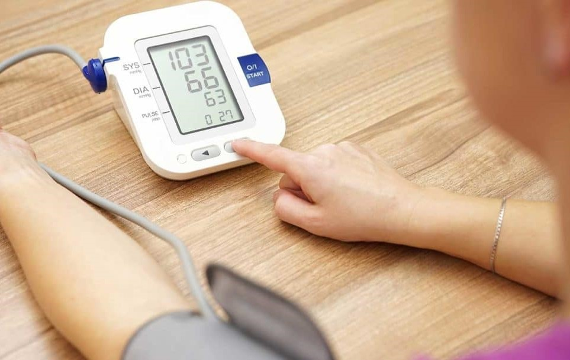

Чаще всего постоянное наличие артериального давления 90/60 мм рт. ст. и ниже говорит о развитии гипотонии. Однако у некоторых людей такие показатели обусловлены физиологическими особенностями организма. В таком случае самочувствие остается нормальным, и человек не испытывает дискомфорта. В идеале артериальное давление должно постоянно оставаться в пределах нормы. Для верхнего показателя нормальным значением является 100-139 мм рт. ст. тогда как нижний должен составлять 60-89. Давление 90 на 60 считается нормальным для ребенка дошкольного возраста. Взрослые люди при подобных показателях сталкиваются с ощущением слабости, если это состояние не обусловлено наследственной предрасположенностью.
Как уже было сказано, иногда такой уровень кровяного давления является вариантом нормы. Это часто встречается у молодежи и людей, имеющих астеническое телосложение. Также низкое давление чаще наблюдается у женщин, чем у мужчин. Нередко проблема имеет наследственный характер и передается от матери к дочери. Существует 2 основные формы гипотонии: Первичная – в этом случае низкое давление не имеет никакой связи с патологиями. Общее самочувствие человека обычно остается нормальным. Вторичная – низкие показатели давления свидетельствуют о наличии заболевания. В том случае причины артериального давления 90 на 60 представляют опасность для здоровья. Причем состояние человека нарушается – возникают слабость, тошнота, головные боли и головокружения
Чтобы повысить давление нужно обратиться к врачу. Специалисты рекомендуют внести коррективы в образ жизни: Правильно питаться. Люди, которые имеют низкое давление, нередко страдают нарушениями аппетита. В их меню должно присутствовать мясо, фрукты и овощи. От газированных напитков, белого хлеба и фастфуда стоит отказаться. Много двигаться. В течение дня необходимо делать перерывы в работе и стараться двигаться. При этом интенсивные нагрузки вводят постепенно и следят за самочувствием. Соблюдать режим работы и отдыха. Необходимо составить режим дня и четко следовать ему. Важно увеличить продолжительность сна до 10-12 часов. В домашних условиях нормализовать показатели поможет следующее: выпить чашку горячего крепкого чая с сахаром – это поможет справиться с головной болью и согреться; выпить кофе – стоит учитывать, что этот напиток дает временный эффект и его нельзя пить беременным женщинам и людям со склонностью к тахикардии; съесть немного шоколада – этот продукт улучшает тонус организма и нормализует самочувствие. Нередко для повышения давления рекомендуется принимать настойки лекарственных растений – элеутерококка, лимонника, женьшеня, родиолы розовой. Они оказывают на организм тонизирующее действие. В более сложных случаях нужно принимать лекарственные средства. Однако их должен назначать лечащий врач. При пониженном давлении следует употреблять такие препараты:
Чтобы поддерживать нормальные параметры АД, нужно соблюдать такие рекомендации:
Падение давления может быть симптомом опасных патологий. Чтобы справиться с этим отклонением, необходимо обратиться к врачу. Терапевт или кардиолог проведет детальную диагностику и подберет оптимальную схему терапии. Немаловажное значение при гипотонии имеет коррекция образа жизни.